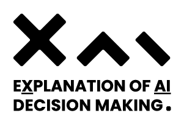

Imagine that a wealthy friend of yours asks for a vacation credit card to his bank, to discover that the credit he is offered is very low. The bank teller cannot explain why. Your stubborn friend continues his quest for explanation up to the bank executives, to discover that an algorithm lowered his credit score. Why? After a long investigation, it turns out that the reason is: bad credit by the former owner of your friend’s house.
Black box AI systems for automated decision making, often based on machine learning over (big) data, map a user's features into a class or a score without exposing the reasons why. This is problematic not only for lack of transparency, but also for possible biases inherited by the algorithms from human prejudices and collection artifacts hidden in the training data, which may lead to unfair or wrong decisions.
XAI project focuses on the urgent open challenge of how to construct meaningful explanations of opaque AI/ML systems, introducing the local-to-global framework for black box explanation, articulated along three lines:
- The language for expressing explanations in terms of expressive logic rules, with statistical and causal interpretation;
- The inference of local explanations for revealing the decision rationale for a specific case, by auditing the black-box in the vicinity of the target instance;
- The bottom-up generalization of many local explanations into simple global ones, with algorithms that optimize for quality and comprehensibility.
Why is it important for society?
Trust is crucial in the adoption of AI/ML technologies, due to perceived challenges to human autonomy, and the lack of knowledge about the assumptions, limitations, and capabilities of AI assistants. Building trust in AI models relies on their capacity to reveal their logic in a comprehensible, human-accessible format, allowing them to understand and validate their decision rationale and highlighting possible biases learned by the model.
Understandable explanations impact not only information ethics but they are a cornerstone for accountability, safety, and industrial liability. Therefore, explainability is fundamental for boosting a vivid market of AI-based services in particular in safety-critical industries. Likewise, the use of AI systems in scientific research requires explanations not only for trust and acceptance but also for the openness and progress of scientific discovery.What are the overall objectives?
The XAI project faces the challenge of requiring AI to be explainable and understandable in human terms and articulates its research along 5 Research Lines
- Algorithms to infer local explanations and their generalization to global ones (post-hoc) and algorithms that are transparent by-design;
- Languages for expressing explanations in terms of logic rules, with statistical and causal interpretation;
- XAI watchdog platform for sharing experimental dataset and explanation algorithms;
- A repertoire of case studies aimed at in involving also final users;
- A framework to study the interplay between XAI and ethical and legal dimensions.